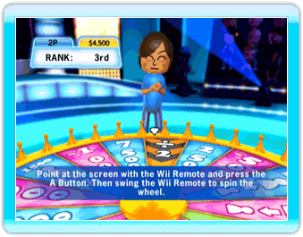
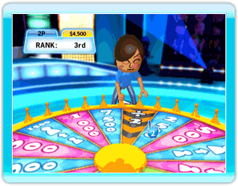

16 |
Wheel |
 |
|
At the end of each round of the Classic Quiz mode, Jerry will ask you if you want to spin the wheel. If you accept to spin, you can win a lot of money... or lose a lot of money.
HINT: Keep in mind that if other players spin the wheel, they could win enough cash to take the lead in the rankings! The following describes how to interact with the wheel and lists the possible results:
 Contestants who decide to spin will go to the wheel one by one. When it is your turn, here’s what you have to do: 1. GRAB THE WHEEL Press the A Button to grab the wheel. 2. SPIN Swing the Wii Remote to the right or the left to spin the wheel. 
Once you have spun the wheel, it will turn for a few seconds and stop on a bonus, penalty or swap section. You win money if you get a positive result. The ‘x2’ result doubles what you already have! You lose money if you get a negative result. The ‘÷2’ result makes you lose half of what you already have. If you spin a ‘Take’ result, you will have the opportunity to take money from an opponent of your choice. Jerry will ask you to choose a contestant to take money from; to do so, just point at the chosen contestant with the Wii Remote and press the A Button to confirm. If you spin a ‘Give’ result, you will have to give money to an opponent of your choice. Jerry will ask you to choose a contestant to give money to; to do so, just point at the chosen contestant with the Wii Remote and press the A Button to confirm. If you spin a ‘Swap’ result, you will have to exchange all your money with an opponent of your choice. Jerry will ask you to choose a contestant to swap money with; to do so, just point at the chosen contestant with the Wii Remote and press the A Button to confirm. |
 |
 |
 |